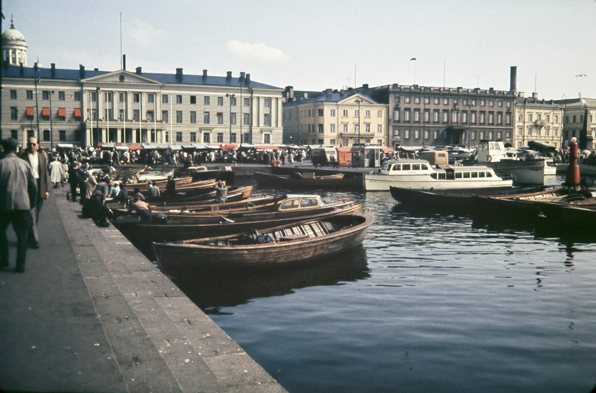
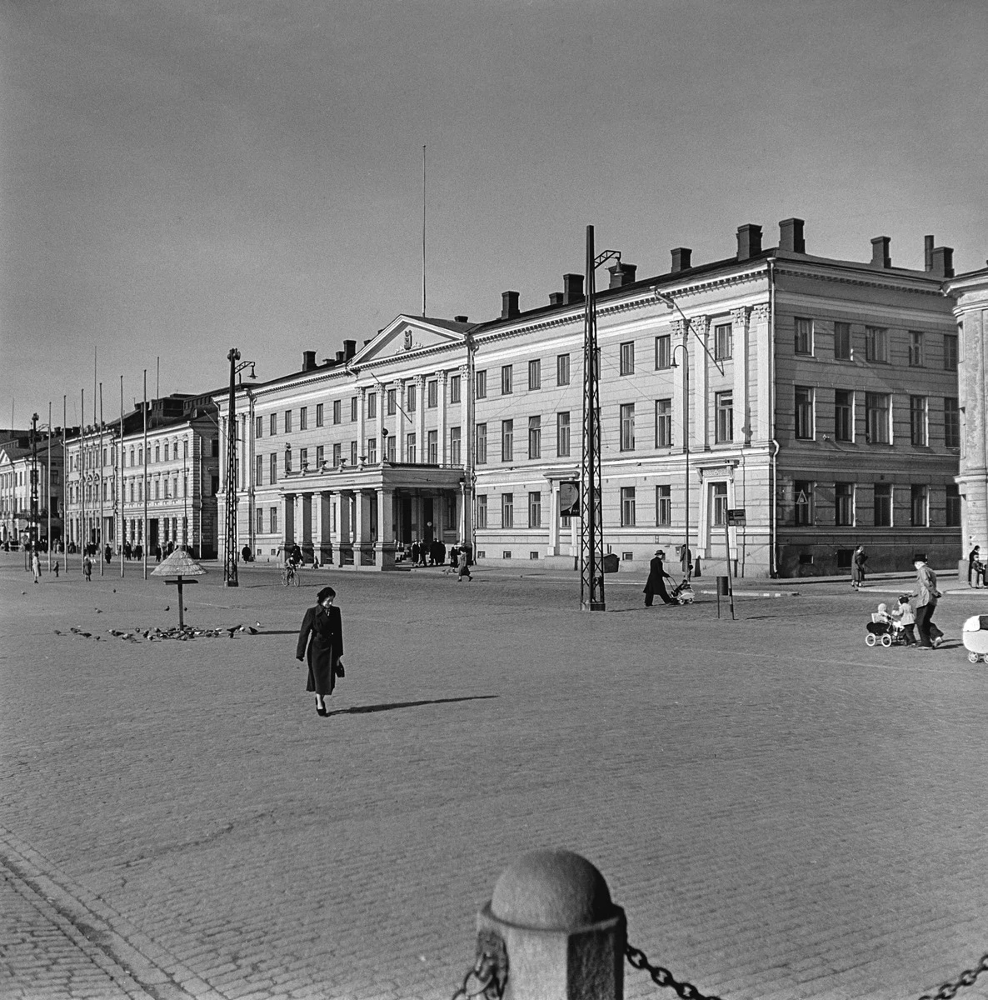

Arkistokuva · 1950–1959 3D-rekonstruktioHELSINKI · KESÄ 1952
Kauppatori
Katsele Kolera-altaan veneitä, kulje rantakiveystä ja käänny kohti torikojuja ja Kaupungintaloa.
Valmistellaan 3D-näkymää…
Arkistokuva taustalla · Arvo Kajantie / Helsingin kaupunginmuseo · 1950–1959
Vertailu käyttää arkistokuvasta arvioitua kamerakulmaa. Julkisivut kohdistuvat, veneet ja rantareuna ovat sovituksia.
Liiku WASD-näppäimillä. Käännä katsetta nuolilla tai vetämällä kuvaa. Kosketusnäytöllä käytä liikkumispainikkeita ja pyyhkäise kuvaa.
LÄHTEET JA TULKINTA
Torin laidalla
Arvo Kajantien värikuva näyttää Kolera-altaan veneet ja torikojut sekä Kaupungintalon ja Pohjoisesplanadin rakennusrivin. Museo ajoittaa kuvan vuosiin 1950–1959.
3D-näkymän julkisivut ovat värikuvasta rajattuja pintoja. Börje Dilénin vuonna 1952 ottama valokuva näyttää Kaupungintalon koristeet ja sisäänkäynnin toisesta suunnasta. Syvyys ja kameran paikka on arvioitu.
Vuoden 1952 matkailijakartasta tarkistin torin, rantareunan ja Kaupungintalon korttelin suhteen. Julkisivut on tulkittu myös valokuvan ja kaupungin historiatietojen pohjalta. Mittasuhteet, veneiden paikat, toritavarat, ajoneuvo, henkilöt, värit ja valaistus ovat havainnollistavia valintoja.
- Kolera-allas, Kauppatori · Finna
- Kaupungintalon historia · Helsingin kaupunki
- Kaupungintalo 1952 · Finna
- Kiveyksen materiaali · Rob Tuytel / Poly Haven · CC0
- Esplanadit ja Kauppatori · Helsingin kaupunki
- Helsingin matkailijakartta 1952 · Avoindata.fi
Näytä karttaote vuodelta 1952

Näytä Kaupungintalo vuonna 1952
